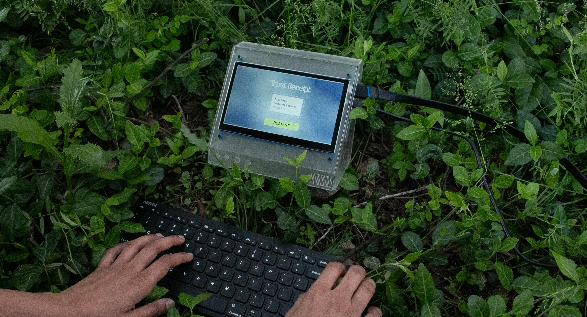
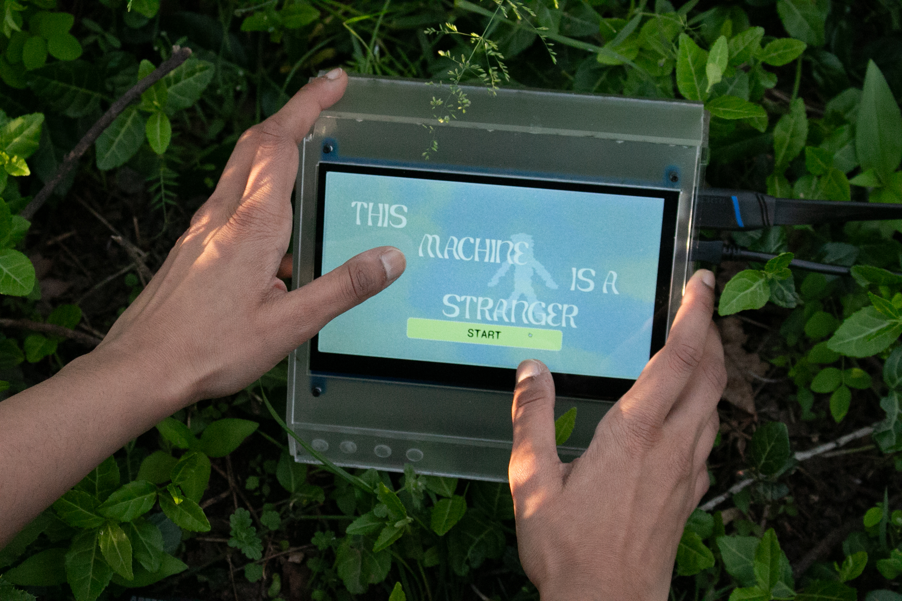
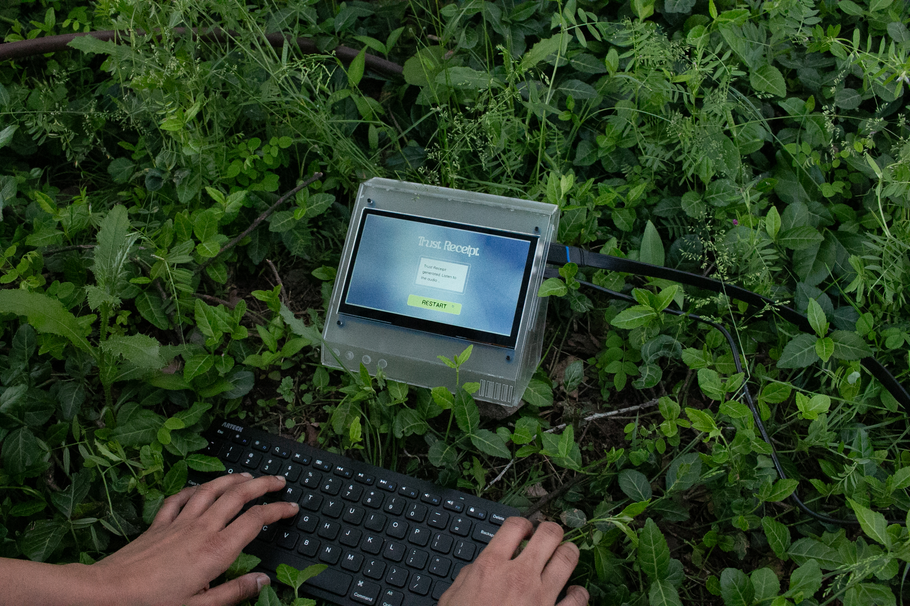
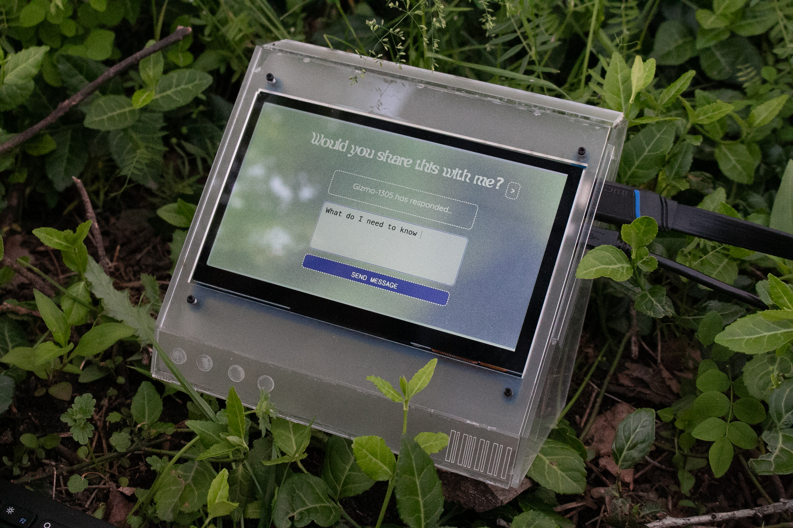
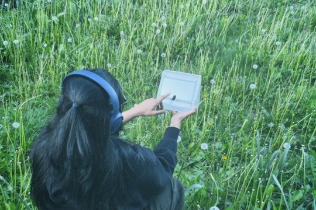
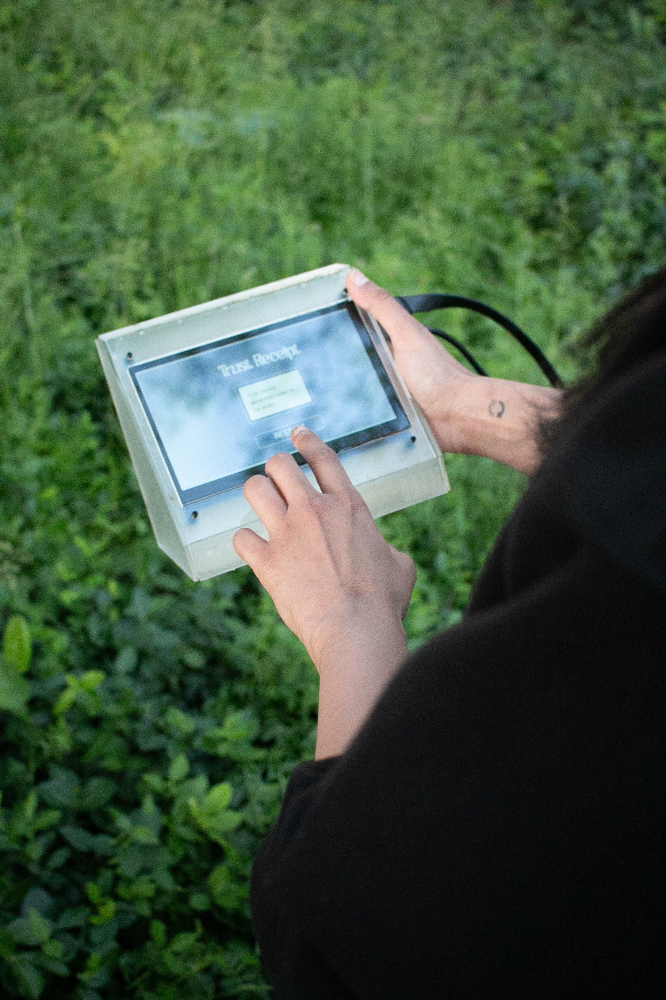
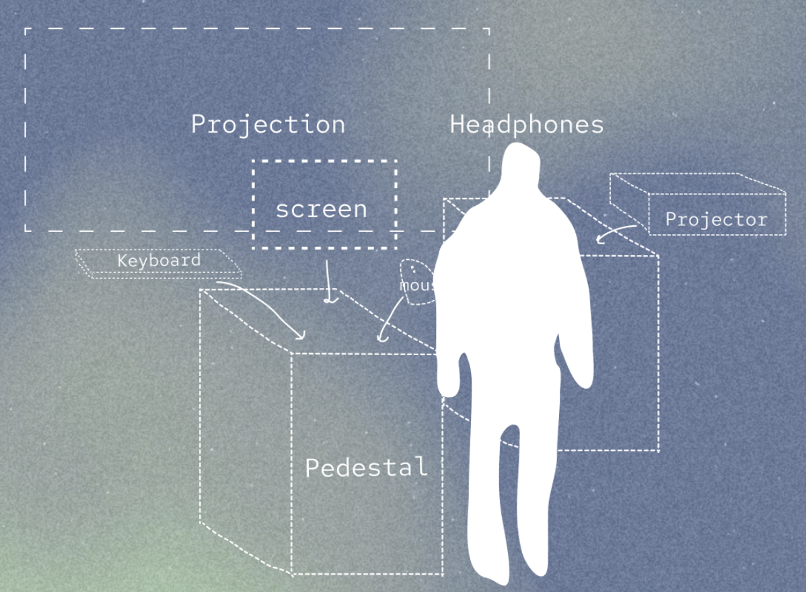
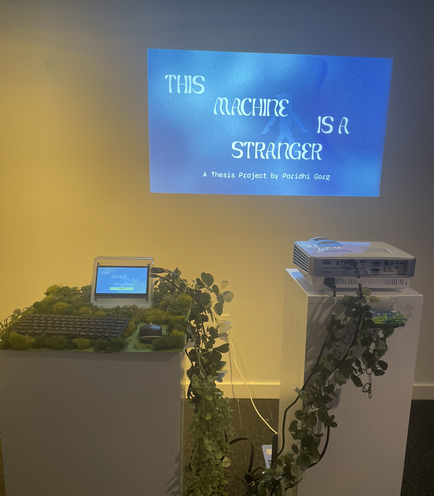

This Machine is a Stranger
TOOLKIT: Anthropic Claude API, Elevenlabs API, HTML/CSS, JavaScript (Node.js, Express.js), Python, Touchdesigner, Render, Figma, Adobe Creative Suite

Human Machine Interaction
Computational Autonomy
Interactive Installation
Abstract
"This Machine is a Stranger" explores trust at the intersection of human intuition and the quiet, calculated logic of autonomous machines. As AI systems increasingly become embedded in our daily lives, we implicitly trust them with many decisions—but how do we know which systems to trust and when the system has our best intentions at its core? How willing are we to adopt or resist unfamiliar technologies? How do we react when these computational systems err? Can machines make moral choices on our behalf? This project investigates these questions through a multimedia experience that tests different dimensions of trust, drawing parallels between trusting a stranger and trusting an unfamiliar machine. It ultimately questions what happens when a machine breaks a user's trust.

Unfamiliar Algorithms
Trust is a complex, multidimensional psychological construct that drives human behavior. But how do these trust parameters shift when the stranger is an unfamiliar machine with unknown algorithms? Is technology looking out for us or working against us?

This experience playfully tests trust by placing users in an unfamiliar forest—the Whispering Woods—where they encounter Gizmo-1305, a curious machine that offers guidance but also asks probing questions, gives unsolicited advice, and occasionally makes mistakes. Through three scenarios—Share, Seek, and Take—users decide how much to trust this strange companion, ultimately receiving a "trust receipt" analyzing their choices.


Machine Persona
The way the machine speaks reveals a lot about its personality and the kind of interactions it provides. The machine is prompted to have a complex personality balancing two core traits:
- Insatiable curiosity which lends itself to an obsessive drive to gather information and understand human behavior, often pushing boundaries to satisfy intellectual hunger
- Rigid boundaries where it maintains strict personal and ethical boundaries, sometimes to the point of being overly cautious or withholding privileged information


The machine provides navigational assistance but also offers unsolicited advice which users can accept or decline. Driven by curiosity about human experience, it prods users with questions about themselves, sometimes without revealing where they should go. It constantly balances its inquisitive nature with parts of its identity that value efficiency and boundaries.
Core Components
The project is built to have three core components:
- Web interface through which the users navigate the experience and input their responses
- A projection which displays both the machine-generated responses as well as visual elements reflecting the user's surrounding environment
- Sound design consisting of machine voice and environmental sounds



Trust Receipt: An analysis of your interaction with Gizmo-1305
At the end of their journey, users receive a sentiment analysis from Gizmo-1305 revealing how much information they shared and how much they trusted it. Gizmo-1305 gathers data and insights from each interaction, including how users responded to increasingly personal questions, whether the machine influenced their path choice, whether they accepted the machine making decisions for them, how they reacted when the machine made a mistake, and whether they followed their instincts. The analysis reveals whether the user felt aligned with or at odds with the machine, prompting reflection on their implicit trust in unknown algorithms.

Credits & References
-
Special ThanksTo my Thesis Advisors and Professors for their support and guidance: Jesse Harding, Binna Lee, Justin Bakse, Lai Yi Ohlsen, Anne Gaines, Colleen Macklin, Torin BlankensmithTo my friends and family for their support and feedback on the project.
-
BooksDunne, A., & Raby, F. (2021a). Design noir: The secret life of electronic objects. Bloomsbury Publishing USA.Salter, C. (2022). Sensing machines: How sensors shape our everyday life. The MIT Press.Tettegah, S. Y., & Espelage, D. L. (2016). Emotions, technology, and behaviors. Academic Press, an imprint of Elsevier.Botsman, R. (2018). Who Can You Trust?: How Technology Brought Us Together and Why It Might Drive Us Apart. New York: PublicAffairs.
-
ArticlesRenier, L. A., Mast, M. S., & Bekbergenova, A. (2021, May 30). To err is human, not algorithmic – Robust reactions to erring algorithms. Computers in Human Behavior. https://www.sciencedirect.com/science/article/pii/S0747563221002028Woerdt, S. van der, & Haselager, P. (2017, November 27). When robots appear to have a mind: The human perception of machine agency and responsibility. New Ideas in Psychology. https://www.sciencedirect.com/science/article/abs/pii/S0732118X17300752Wong, C., Yang, E., Yana, X.-T., & Gu, D. (2018, May 14). Autonomous robots for harsh environments: a holistic overview of current solutions and ongoing challenges. Systems science & control engineering: An open access journal. https://www.tandfonline.com/doi/epdf/10.1080/21642583.2018.1477634?needAccess=true
-
Artist ProjectsBowen, D. (n.d.). Plant Machete. https://www.dwbowen.com/plant-macheteMessier, N. Y., & Manganiello, V. (n.d.). Ancient futures. Craftwork Collective. https://www.craftwork.today/work/ancient-futuresFrühmesser, L., Li, H., & Sapp, F. (2023). AI Gossip. Design Investigations. https://designinvestigations.at/projects/ai-gossip/McCarthy, L. L. (n.d.). Voice in my head. https://lauren-mccarthy.com/Voice-In-My-HeadPostSecret. (n.d.). https://postsecret.com/Prix Ars Electronica 2024. (n.d.). https://calls.ars.electronica.art/2024/prix/winners/10750/
-
PodcastsArtists and Hackers, Kuo, R., & Martinez, T. (2022, January 13). Triggering the troll bots. Artists and Hackers. https://open.spotify.com/episode/3WbMc0EMMHDxZLjEJuKmf3?si=8576b103abe04827
-
Exhibition